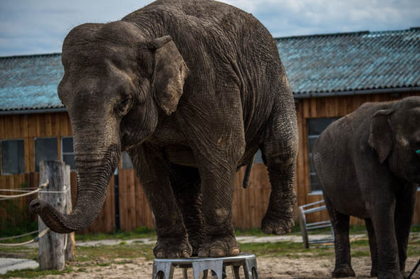

01
Állatkertből Cirkuszba
Ennek a jelenségnek remek pédája az a tény, hogy az Egyesült Királsyág állatkerjei kapcsolatokat ápoltak cirkuszokkal. A Freedom for Animals kimutatta, hogy 2009-ben a kereskedelmi szövetség tagjai tenyésztési célokkal tartott fent kapcsolatot cirkuszokkal. Egy másik állatkert tevéket, oroszlánokat és tigriseket tenyésztett, akiket később eladtak a nagy angol cirkusznak.